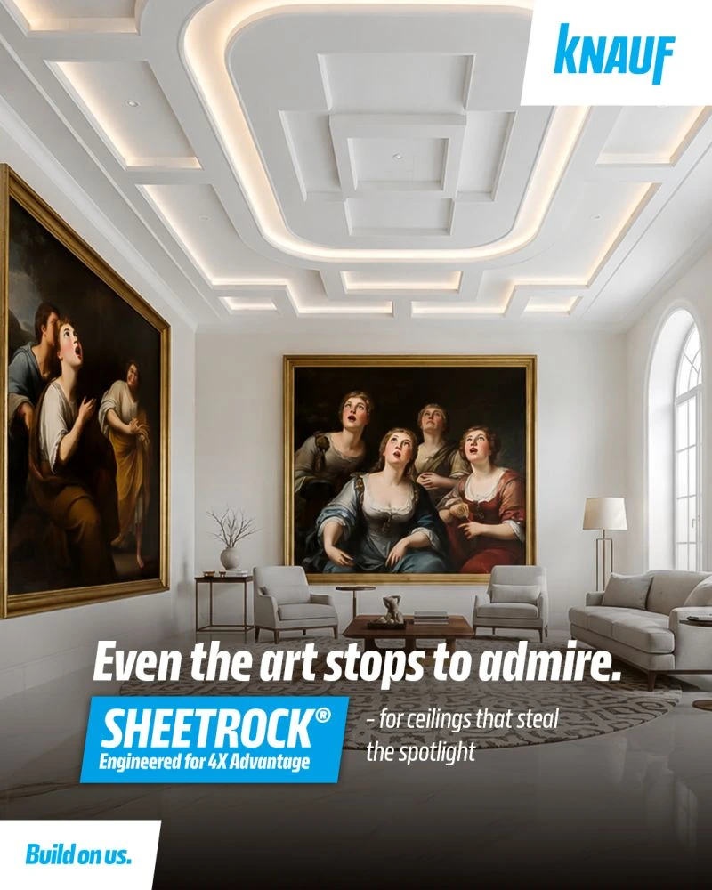
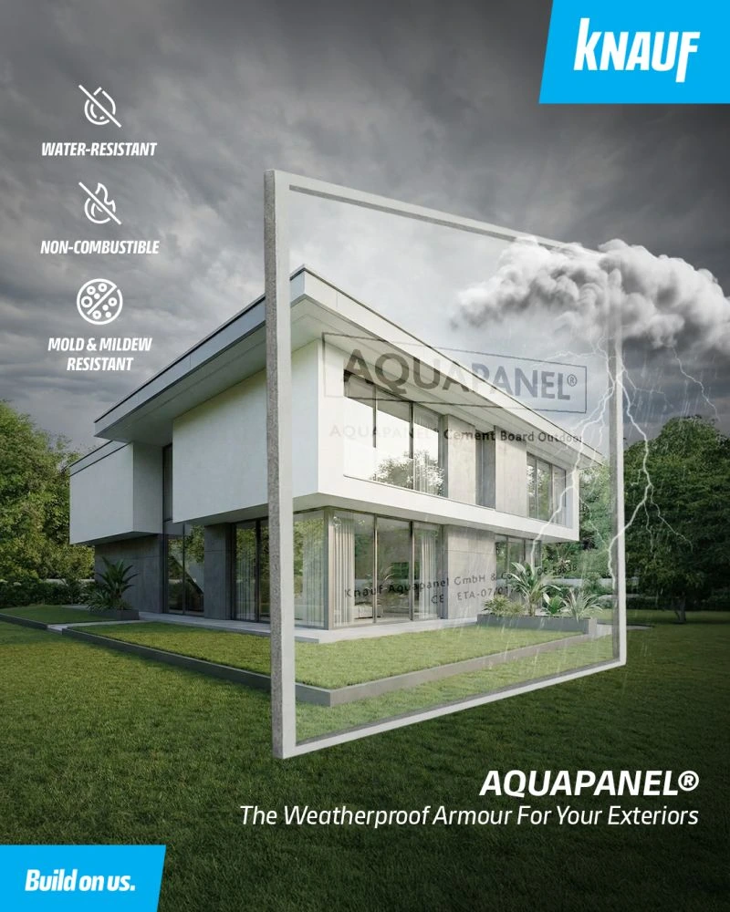
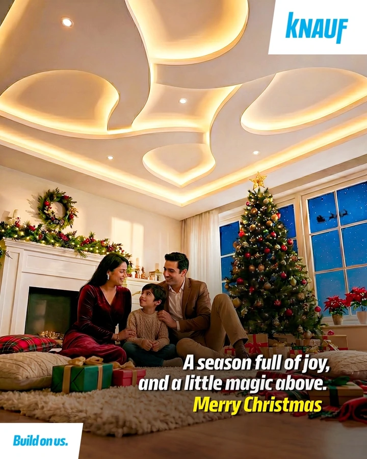

Knauf India
Give product stories
a human setting.
As part of Buffalo Soldiers Digital’s account team, I contributed to content strategy and social execution, including paid campaign support and Thundersteel product storytelling.
Audience planning, Hindi and English concepts, creative coordination, publishing and reporting sat within the wider agency team’s work.
The supplied selection below shows Sheetrock, Aquapanel and seasonal communication; it is not presented as Thundersteel campaign evidence.


Strategy & contribution : Knauf India
Content strategy & execution
Working with the wider account team, I helped shape audience-led product communication and supported the everyday work needed to publish it consistently.
- Contributed to content strategy, audience planning and bilingual Hindi and English story concepts.
- Worked on Thundersteel product storytelling and related social content.
- Supported paid social campaigns in coordination with the wider account team.
- Handled day-to-day social media tasks, including content calendars, creative coordination, publishing and performance reporting.
Collaborative account work: my contributions sat within Buffalo Soldiers Digital’s wider strategy, creative and campaign team.